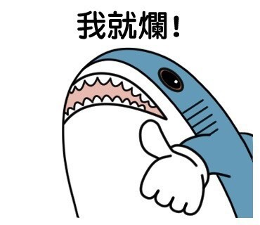
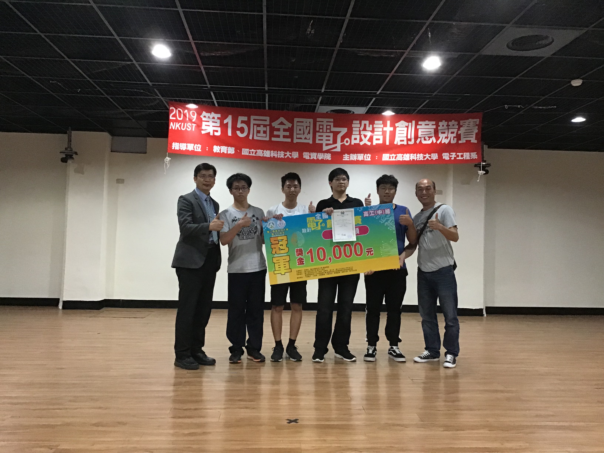

首頁
個人經歷
打FPS遊戲的感想
追韓國女團的心得
對未來的看法
Link 1
Link 2
Link 3
Link 4
人森經歷過的事情
生命可貴，別做傻事
爸爸叫你起床
國小到高中的求學經歷
從小到大我不算是一個乖乖排學生常常在做讓老師頭痛的事情，但是我都是因為內心有想法或者是覺得不公平的事情我才會直接起來反映，雖然有時候言詞太激動但還是會被叫去輔導一下，就這樣到了高中時期我因為被班導師教化了，我才了解到許多東西不是馬上出去就有用地所以我改變了 我的壞脾氣，一路上從國小都還常常前五到國中都還在中前段但是大考的時候我就很容易出錯導致我都不是到我心儀的學校不過幸好我所遇到的老師都不錯也不會讓我後悔到長榮還有正修來學習。


求學中發生最好的事
高中因為就讀資訊科必須要做出專題來，二年級做出的東西並未獲得老師青睞所以到了高三我這組專題組別就有特別想到，並且我們不斷努力成功做出這項"生活LINE起來"並且到了高科大比賽獲得了第一名，這真的是讓我開心了一整個月呢。
求學只是為了讓我拿一張門票阿
回到頂端